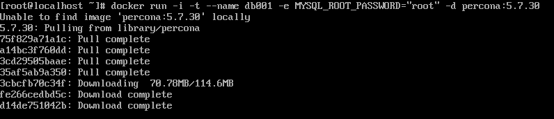

Docker volume with MySQL
목표
- CentOS8에 도커를 설치하고 MySQL 컨테이너를 로드합니다
- 컨테이너를 종료하고 외부에서 접속하도록 다시 로드합니다
- 컨테이너를 삭제해도 이전 데이터를 그대로 유지하는 stateful한 상태를 구현합니다
- Stateful 상태는 Volume설정을 통해 구현합니다
Docker 설치
-
yum util 패키지 설치
-
docker를 위한 repo를 설정
-
docker-ce 설치
-
(이미 설치된 패키지 떄문에)설치 에러 발생시 allowerasing 옵션
-
docker를 실행
-
docker 버전 확인
MySQL 컨테이너 설치
-
MYSQL 컨테이너를 실행합니다. 5.7.30 버전 mySQL 컨테이너를 다운로드하고 db001이라는 컨테이너 이름으로 로드하는 명령입니다
-i, -t : 컨테이너의 shell에 접속하기 위한 옵션 —name : 컨테이너 이름 -e : 환경변수 세팅 -d : 백그라운드에서 컨테이너 실행
아래 스크린샷 처럼 우선 로컬에서 컨테이너를 찾아보고 없으면 도커허브에서 알아서 찾고 다운로드하여 컨테이너를 로드합니다

-
다음 명령으로 현재 실행중인 컨테이너에 MySQL이 존재하는 것을 확인할 수 있습니다

-
db001컨테이너에 /bin/bash 셸을 통해 접속합니다

-
컨테이너에 접속되었으면 MySQL에 접속하고 데이터베이스 목록을 호출합니다

-
다음 실습을 위해 컨테이너를 중지 후 삭제합니다
외부에서 MySQL 컨테이너 접속
-
호스트에 MySQL 클라이언트를 설치합니다
-
외부에서 컨테이너를 접속하려면 접속포트와 컨테이너포트, 도커 호스트 IP가 필요합니다
-
컨테이너를 로드할 때 포트를 매칭해줍니다
-
docker ps를 이용해 동작중인 컨테이너 목록을 확인하면 이번엔 포트가 연결된 것을 확인할 수 있습니다

-
도커 호스트 IP를 파라미터에 전달하여 MySQL을 실행합니다
-
컨테이너 외부에서 DB 접속을 성공하였습니다

-
다음 실습을 위해 컨테이너를 중지 후 삭제합니다
Stateful 구현을 위한 Volume 설정
-
도커 호스트에 데이터 저장을 위한 디렉터리 생성
-
작업이 가능하도록 디렉터리에 권한 부여
-
볼륨 옵션을 추가하여 컨테이너를 로드합니다
이는 데이터 저장을 위해 생성했던 디렉터리와 컨테이너의 디렉터리가 공유되도록 설정(매핑)합니다
-
컨테이너 로드 후 데이터 저장용 디렉터리로 이동하면 파일이 생성된 것을 확인할 수 있습니다

MAGIC
-
stateful 구현 테스트를 위한 데이터를 생성합니다
create database test default character set=utf8; use test; create table tt(num int); insert into tt values(1), (2), (3); select * from tt;
-
Stateful 테스트를 위해 컨테이너를 삭제합니다
-
컨테이너를 다시 로드합니다
-
구동된 컨테이너에서 아까 작성했던 테이블이 살아있는 것을 확인할 수 있습니다.

-
Stateful 구현에 성공하였습니다

-
데이터뿐만 아니라 로그, 설정파일 등에 응용할 수 있습니다
-
다시 컨테이너를 제거합니다
-
로그와 설정을 위한 디렉토리를 생성하고 권한을 부여합니다
-
/db/db001/conf 디렉터리에 644 퍼미션을 가지는 cnf 파일을 생성합니다
-
my.cnf
server-id와 report_host 값은 유니크한 특성(고유값)을 가져야합니다
[mysqld] log_bin = mysql-bin binlog_format = ROW gtid_mode = ON enforce-gtid-consistency = true server-id = 100 log_slave_updates datadir = /var/lib/mysql socket = /var/lib/mysql/mysql.sock # Disabling symbolic-links is recommended to prevent assorted security risks symbolic-links = 0 log-error = /var/log/mysql/mysqld.log pid-file = /var/run/mysqld/mysqld.pid report_host = db001 [mysqld_safe] pid-file = /var/run/mysqld/mysqld.pid socket = /var/lib/mysql/mysql.sock nice = 0 -
-
다음 명령으로 데이터, 로그, 설정파일이 모두 매핑된 컨테이너를 실행합니다
-
로그폴더에 들어가보면 로그가 정상적으로 보이는 것을 확인할 수 있습니다

링크
-
percona 이미지 정보는 다음 주소에서 그 내용을 확인할 수 있습니다
https://github.com/percona/percona-docker/blob/master/percona-server-5.7/Dockerfile